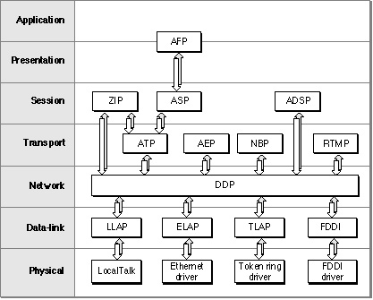

AppleTalk and the OSI Model
This section provides general information about the relationship between AppleTalk and an industry-standard networking model. You do not need to read this section to under-
stand the AppleTalk protocols or to use the AppleTalk Manager.Most networking systems are designed as layered architectures that relate to what are called reference models. These matrices offer a structure that network designers can refer to in developing a network architecture; they are guidelines and not rules. Each layer
of a model collects together those functions that are similar or highly interrelated
and provides services to the layer above it. Network designers develop protocols that encompass the functions of each layer. Often more than one protocol is defined and implemented to handle the requirements of a layer in different ways. Some protocols include functions that span more than one layer specified by a model. For example, in favor of efficiency, a network protocol developer may elect to define a single protocol that spans two or more layers of a reference model.Various layered models have been developed that provide standards for the design and development of networking software. One of these models is the Open Systems Interconnection (OSI) model, which is a seven-layered standard that was published by the International Standards Organization (ISO) in the 1970s. This is the model with which the AppleTalk network system architecture is most closely aligned.
Figure 1-5 on page 1-17 shows the relationships among the AppleTalk protocols and
- Note
- Although this section discusses AppleTalk in relation to the OSI
model, it does not claim a protocol compatibility of AppleTalk
with the OSI protocols currently in various stages of definition, approval, and deployment.
how they map to the OSI model. The shaded area of the graphic shows the name of
the OSI layer. A connection between one protocol and another above or below it in the
figure indicates that the upper protocol is a client of the lower protocol, that is, the
upper protocol uses services provided by the lower protocol in order to carry out
some functions.Application Layer
The highest layer of the OSI model is the application layer. This layer allows for the development of application software. Software written at this layer benefits from the services of all the underlying layers. There is no AppleTalk protocol that maps directly
to this layer, although some of the functions of the AppleTalk Filing Protocol (AFP) fulfill this layer.Figure 1-5 AppleTalk protocol stack and the OSI model

Presentation Layer
The presentation layer assumes that an end-to-end path or connection already exists across the network between the two communicating parties, and it is concerned with
the representation of data values for transfer, or the transfer syntax. In the OSI model, the AppleTalk Filing Protocol (AFP) spans the presentation and application layers. AFP provides an interface between an application and a file server. It uses the services of
ASP, which, in turn, is a client of ATP.AFP allows a workstation on an AppleTalk network to access files on an AFP file server, such as an AppleShare file server. When the user opens a session with an AppleShare file server over an internet, it appears to any application running on the workstation that uses File Manager routines as if the files on the file server were located on a disk drive connected to the workstation.
Session Layer
The session layer serves as an interface into the transport layer, which is below it. The session layer allows for session establishment, which is the process of setting up a connection over which a dialog between two applications or processes can occur. Some of the functions that the session layer provides for are flow control, establishment of synchronization points for checks and recovery for file transfer, full-duplex and half-
duplex dialogs between processes, and aborts and restarts.The AppleTalk protocols implemented at the session layer are
- the AppleTalk Data Stream Protocol (ADSP), which provides its own stream-based transport layer services that allow for full-duplex dialogs
- the AppleTalk Session Protocol (ASP), which uses the transaction-based services of ATP to transport workstation commands to servers
- the Zone Information Protocol (ZIP), which provides applications and processes with access to zone names. Each node on a network belongs to a zone.
Transport Layer
The transport layer isolates some of the physical and functional aspects of a packet network from the upper three layers. It provides for end-to-end accountability, ensuring that all packets of data sent across the network are received and in the correct order.
This is the process that is referred to as reliable delivery of data, and it involves providing
a means of identifying packet loss and supplying a retransmission mechanism. The transport layer also provides connection and session management services.The following AppleTalk protocols are implemented at the transport layer:
In addition to these transport layer protocols, the AppleTalk Data Stream Protocol (ADSP) includes functions that span both the transport and the session layers. ADSP provides for reliable delivery of data, and in that capacity it covers the transport layer requirements.
- Name-Binding Protocol (NBP)
- AppleTalk Transaction Protocol (ATP)
- AppleTalk Echo Protocol (AEP)
- Routing Table Maintenance Protocol (RTMP)
Network Layer
The network layer specifies the network routing of data packets between nodes and
the communications between networks, which is referred to as internetworking. The Datagram Delivery Protocol (DDP) is the AppleTalk protocol implemented at the network layer. DDP is a connectionless datagram protocol providing best-effort delivery. This means that DDP transfers data as discrete packets and that DDP does not include support to ensure that all packets sent are received at the destination or that those packets that are received are in the correct order. Higher-level protocols that use the services of DDP provide for this kind of reliability.Data-Link and Physical Layers
The data-link layer and the physical layer provide for connectivity. The communication between networked systems can be via a physical cable made of wire or fiber optic, or it can be via infrared or microwave transmission. In addition to these, the hardware can include a network interface controller (NIC), if one is used. The hardware or transport media and the device drivers for the hardware comprise the physical layer. LocalTalk, token ring, Ethernet, and Fiber Distributed Data Interface (FDDI) are examples of types of networking hardware that AppleTalk supports.The physical hardware provides nodes on a network with a shared data transmission medium called a link. The data-link layer includes a protocol that specifies the physical aspects of the data link and the link-access protocol, which handles the logistics of sending the data packet over the transport medium. AppleTalk is designed to be data-link independent, allowing for the use of various types of hardware and their link-access protocols.